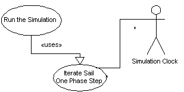

Use Cases
|
Diagram
|

|
|
Name
|
Iterate Sail One Phase Step
|
|
Iteration
|
Finished
|
|
Summary
|
When the User orders an orbit iteration during a flight simulation, this
case handles the details of the command. The System steps forward or
backward along the Sail's orbit one phase step and returns a Sail with a
valid physical state at the other end of the step.
|
|
Basic Course of Events
|
- The Command to step forward or backward is issued within the simulation.
- The Sail interprets the command as a phase step and issues the revised
order to one of its properties (Orbit) as a discrete orbit iteration.
- The Orbit then requests an update to the orbit properties from one of
its properties (Perturber) as a small perturbation.
- The Perturber collects all the perturbing forces registered with it into
a list.
- The Perturber takes the list and calculates resulting forces and torques
from each of them.
- The Perturber takes the sum of the perturbing forces and calculates the
changes to the orbit parameters.
- If the changes to the parameters are not small relative to the original
parameters, the Perturber informs the Orbit it will try again with a phase
step that is half the size of the original. Return to step 6.
- The Perturber hands the new orbit parameters to the Orbit.
- The Orbit derives the new location and velocity of the Sail based upon
old orbit properties and then changes those parameters to reflect the new
ones delivered by the Perturber.
- The Orbit updates other derived properties and completes the order
issued by the Sail.
- The Sail updates its other derived properties and issues a statement to
all its registered listeners signaling the completion of the order.
|
|
Alternative Paths
|
.
|
|
Exception Paths
|
.
|
|
Extension Points
|
.
|
|
Trigger
|
A command from the user or a command list triggers this use case. The User
does not trigger the case directly. They do it through the case that runs
simulations.
|
|
Assumptions
|
If the system is configured to use a library, there must be sufficient room
in the library to store the newly derived Sail. The System will
automatically try to save the Sail state unless there is a command
overriding this behavior.
|
|
Preconditions
|
- In step 8, the test for relative smallness is made against a value provided
as an assumption from the Flight Assumptions List. If no related assumption
is made, a default value will be used.
- A well formed Sail.
- A command to step forward or backward along the orbit.
- Optional commands ordering the output of derived information.
- A library in which to save the newly derived Sail.
|
|
Postconditions
|
- A well formed Sail one orbital phase step removed from the first one.
- The newly derived Sail is stored in the library.
|
|
Related Environment Rules
|
1
|
|
Author
|
Dr Alfred W Differ
|
|
Date
|
2002/01/10 - Facade
2002/01/15 - Filled
2002/02/07 - Focused
2002/02/15 - Finished
|